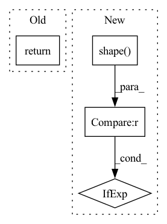

Pattern ID :11987
Before Change
image = tf.expand_dims(image, 0)
if self.rescale_mode == "raw":
return image
elif self.rescale_mode == "raw01":
return image / 255.0
else:After Change
if input_shape is not None:
self.set_input_shape(input_shape)
images = [image] if len(np.shape(image)) == 3 else image
images = [np.array(Image.fromarray(image).resize(self.input_shape)) for image in images]
images = (np.stack(images) - self.mean) / self.std
In pattern: SUPERPATTERN
Frequency: 3
Non-data size: 4
Instances Fragment ID: 40528731
Project Name: leondgarse/keras_cv_attention_models
Commit Name: 2f70b0d51c8f2b1f8664f32dc75ecc1001758946
Time: 2023-01-29
Author: leondgarse@gmail.com
File Name: keras_cv_attention_models/common_layers.py
M Class Name: PreprocessInput
N Class Name: PreprocessInput
M Method Name: __call__(5)
N Method Name: __call__(5)
M Parent Class:
N Parent Class:
M File Name: keras_cv_attention_models/common_layers.py
N File Name: keras_cv_attention_models/common_layers.py
M Start Line: 586
M End Line: 601
N Start Line: 609
N End Line: 616
Before Change
output = (start_logits, end_logits) + outputs[2:]
return output
After Change
if start_positions.ndim > 1:
end_positions = end_positions.squeeze(-1)
// sometimes the start/end positions are outside our model inputs, we ignore these terms
ignored_index = paddle.shape( start_logits) [1]
start_positions = start_positions.clip(0, ignored_index)
end_positions = end_positions.clip(0, ignored_index)
loss_fct = paddle.nn.CrossEntropyLoss(ignore_index=ignored_index)
start_loss = loss_fct(start_logits, start_positions)
end_loss = loss_fct(end_logits, end_positions)
total_loss = (start_loss + end_loss) / 2
if not return_dict:
output = (start_logits, end_logits) + outputs[2:]
return ((total_loss,) + output) if total_loss is not None else output
return QuestionAnsweringModelOutput(
loss=total_loss, Fragment ID: 40528734
Project Name: paddlepaddle/paddlenlp
Commit Name: d812834bf689d09b5531ec29b8c0a2c5eb5cbd67
Time: 2023-02-23
Author: wanghuijuan03@baidu.com
File Name: paddlenlp/transformers/mobilebert/modeling.py
M Class Name: MobileBertForQuestionAnswering
N Class Name: MobileBertForQuestionAnswering
M Method Name: forward(12)
N Method Name: forward(11)
M Parent Class: MobileBertPretrainedModel
N Parent Class: MobileBertPretrainedModel
M File Name: paddlenlp/transformers/mobilebert/modeling.py
N File Name: paddlenlp/transformers/mobilebert/modeling.py
M Start Line: 1390
M End Line: 1392
N Start Line: 1094
N End Line: 1192
Before Change
prediction_scores, seq_relationship_score = self.cls(sequence_output, pooled_output)
output = (prediction_scores, seq_relationship_score) + outputs[2:]
return output
@register_base_modelAfter Change
if labels is not None:
loss_fct = paddle.nn.CrossEntropyLoss()
total_loss = loss_fct(
prediction_scores.reshape((-1, paddle.shape( prediction_scores) [-1])), labels.reshape((-1,))
)
if not return_dict:
output = (prediction_scores, seq_relationship_score) + outputs[2:]
return ((total_loss,) + output) if total_loss is not None else output
return MobileBertForPreTrainingOutput(
loss=total_loss, Fragment ID: 40528736
Project Name: paddlepaddle/paddlenlp
Commit Name: d812834bf689d09b5531ec29b8c0a2c5eb5cbd67
Time: 2023-02-23
Author: wanghuijuan03@baidu.com
File Name: paddlenlp/transformers/mobilebert/modeling.py
M Class Name: MobileBertForPreTraining
N Class Name: MobileBertForPreTraining
M Method Name: forward(11)
N Method Name: forward(9)
M Parent Class: MobileBertPretrainedModel
N Parent Class: MobileBertPretrainedModel
M File Name: paddlenlp/transformers/mobilebert/modeling.py
N File Name: paddlenlp/transformers/mobilebert/modeling.py
M Start Line: 876
M End Line: 890
N Start Line: 613
N End Line: 695